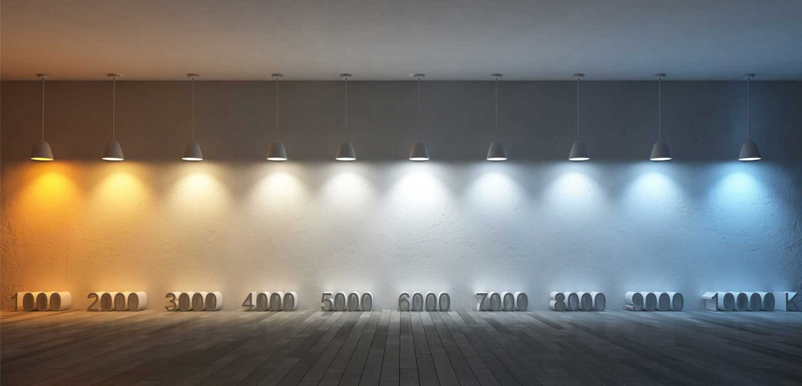

Luces Cálidas o Frías, ¿Cuál Elegir y Por Qué?.
Escrito el: 23/06/2021 por: Matías Martínez
Cada tonalidad de luz LED tiene un uso apropiado según el ambiente y la sensación que deseemos causar. La Luz Cálida es ideal cuando se quieren crear ambientes cálidos y acogedores. La Luz Fría se utiliza sobre todo en lugares donde hay mucho movimiento de paso y en zonas especialmente oscuras. En tanto que, la Luz Neutra es la más parecida a la luz del día natural. Eso la hace idónea para iluminación general de todo tipo de salas.
De esta manera, si lo que se requiere es tener un lugar iluminado con un ambiente conveniente para la relajación y el descanso, como habitaciones, salas de estar, comedor, entre otros, el Blanco Cálido es lo más recomendable.
El Blanco Frío se caracteriza por crear un ambiente más estimulante, debido a sus tonos azulados. Por esto, se recomienda para áreas donde se realizan las primeras actividades diarias, como el cuarto de baño o para ciertas zonas de la cocina. Áreas que mantienen y requieren un tránsito continuo, como pasillos y escaleras o la entrada. Es también muy utilizada en aparcamientos y hospitales, en el ámbito más profesional. Se consideran frías con una temperatura del color por encima de los 5.000 grados Kelvin.
En locales comerciales y oficinas es preferible el uso del Blanco Neutro. Éste realza los colores y produce efecto de alta animosidad en las personas. Lo que, se puede traducir en mayor venta y/o rendimiento de los empleados. En el hogar lo podemos utilizar en salas de estudio y lectura o como iluminación general. Si el blanco cálido no es de tu agrado en alguna sala también puedes incluso combinarlos.
Sin lugar a dudas, por sus diferentes cualidades, se deben usar luminarias LED, ya que son más rendidoras y ahorrativas dentro de otras ventajas. Según los requerimientos y necesidades puede usarse bombillas, dicroicas, downlights, proyectores, paneles y lámparas para las diferentes temperaturas de color. Cada uno de estos artículos está especialmente diseñado para su ubicación estratégica dentro de los ambientes y pueden contener una temperatura de Color según la necesidad de Luz Blanca Cálida, Fría o Neutra.